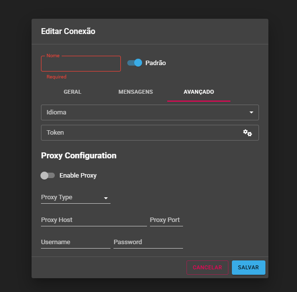
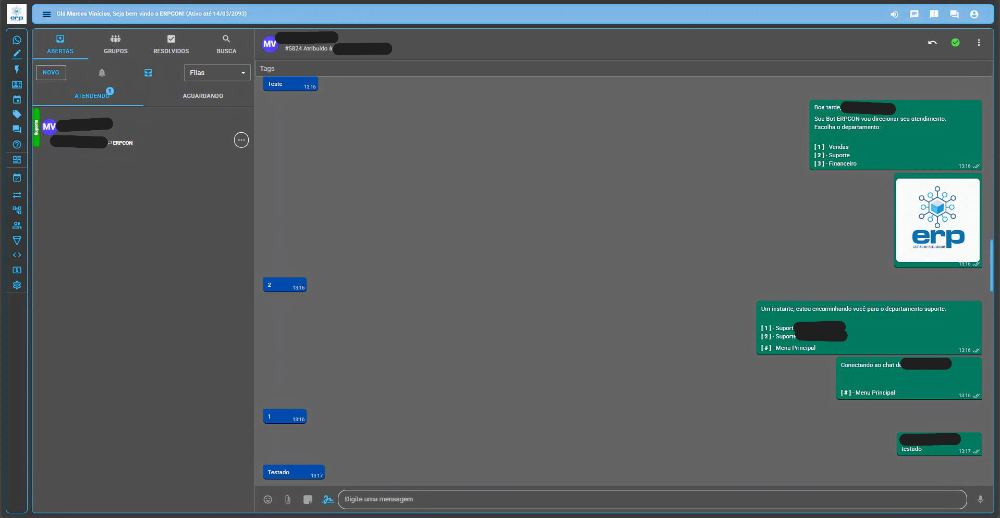

Visão Geral
O módulo de Filas & Chatbot é a base para organizar toda a sua estrutura de atendimento. Uma "Fila", neste contexto, funciona como um departamento, setor ou equipe dentro da sua empresa. É aqui que você criará os diferentes grupos que receberão os contatos dos clientes, como "Vendas", "Suporte Técnico", "Financeiro", etc.
Além de criar as filas, esta seção permite configurar a primeira interação automática com o cliente, como a "Mensagem de Saudação" que ele receberá assim que iniciar uma conversa. As filas que você criar aqui serão essenciais no próximo módulo, pois cada "Conexão" (canal de WhatsApp, Instagram, etc.) deverá ser direcionada para uma fila específica.
Acesso e Permissões
Para acessar esta área, utilize o menu de navegação localizado na lateral esquerda da tela. Clique na seção Administração e, em seguida, na opção Filas & Chatbot.
Interface da Tela de Filas & Chatbot
Ao acessar a tela, você encontrará os seguintes elementos:
- Lista de Filas: A área principal exibe uma lista com todas as filas que já foram criadas. Para cada fila, as seguintes informações são apresentadas: Nome (identifica a fila), Cor (facilita a identificação visual), Mensagem de saudação e Ações (Editar ou Excluir).
- Botão "ADICIONAR FILA": Localizado no canto superior direito, este é o botão principal da tela para cadastrar uma nova fila.

Adicionando uma Nova Fila
Ao clicar no botão "ADICIONAR FILA", uma janela de configuração se abrirá para definir todos os parâmetros do seu novo departamento.
Dados da Fila
Nome: Defina o nome que identificará esta fila em todo o sistema. Este campo é obrigatório.
Cor: Escolha uma cor para a fila para identificação rápida nos painéis.
Provedor de Chatbot: Define qual sistema irá controlar o fluxo de automação:
- Chatbot Interno: Utiliza o construtor nativo ideal para menus diretos (Ex: Digite 1 para Vendas).
- Webhook / N8N: Para integrações avançadas onde sistemas externos controlam as respostas.
- Typebot: Permite integrar com fluxos construídos na plataforma Typebot.
Opções (Menu do Chatbot Interno)
Se selecionou "Chatbot Interno", aqui você constrói o menu interativo:
- + ADICIONAR: Cria uma nova opção de menu para o cliente.
- Título da opção: O texto que descreve a opção (Ex: "Falar com Financeiro").
- Ícones de Ação:
Disquete (Salvar): !! PONTO DE ATENÇÃO MÁXIMA !! Qualquer alteração DEVE SER SALVA clicando neste ícone. Se apenas clicar em "ADICIONAR" no final da janela, as configurações serão perdidas.
Lixeira (Excluir): Remove a opção. - Digite o texto da opção: A resposta que o cliente receberá.
- Exit chatbot: A automação para e o ticket vai para atendimento humano.
- Forward to Queue: Transfere automaticamente para outra fila.
Botões de Ação Principais: ANEXAR ARQUIVO (imagens, vídeos ou documentos na saudação), CANCELAR e ADICIONAR (salva a configuração geral da fila).
Visão Geral
O módulo de Conexões é o ponto de partida crítico. É aqui que você cadastra e gerencia todos os canais de comunicação (WhatsApp, Instagram, etc.). Uma vez ativa, as conversas são organizadas e distribuídas para suas equipes.
Acesso e Permissões
Acesse via Administração > Conexões. O gerenciamento é restrito a Administradores para garantir a segurança dos canais oficiais da empresa.

Interface da Tela de Conexões
Exibe o Nome, Channel (tipo de canal), Status (Online/Offline/Ler QR Code), Padrão e Ações. O botão "ADICIONAR CONEXÃO" inicia o vínculo de um novo canal.
Adicionando uma Nova Conexão
A janela é dividida em abas:
Aba GERAL: Define a Fila principal de destino dos contatos.
Aba MENSAGENS: Configura Saudação, Conclusão (Obrigatório), Transferência, Fora de Expediente e Avaliação (esta última se a pesquisa estiver ativa). Use {{name}} e {{protocol}} para personalizar.
Aba AVANÇADO: Contém campos como Token, Hub Token e Proxy. Devem ser alterados apenas por técnicos se a infraestrutura da empresa exigir.
Visão Geral
O módulo de Usuários gerencia quem acessa a plataforma, definindo perfis e associando-os às filas. Acesse via Administração > Usuários. Funcionalidade restrita a Administradores.
Interface e Cadastro
Exibe Nome, E-mail, Perfil e Ações. Ao adicionar um usuário, preencha:
- Nome, Senha e Email: Dados básicos.
- Filas: Selecione as filas que o usuário poderá visualizar.
- Perfil: User (atendentes) ou Admin (acesso total).

Como Criar um Perfil de "Supervisor"
Para um usuário ver várias filas sem acesso total às configurações:
- Selecione Perfil Admin.
- Ative "Ocultar interface de administração".
- Selecione todas as filas que ele poderá gerenciar.
Visão Geral
A tela de Atendimento é o centro de operações onde as conversas tornam-se "tickets". Atendentes veem apenas suas filas, enquanto Admins/Supervisores têm visão ampla.

Interface e Painéis
- Painel de Gerenciamento: Abas de ABERTAS (Atendendo/Aguardando), RESOLVIDOS e BUSCA (recomendado usar Tags).
- Barra de Ferramentas: Botão NOVO (iniciar conversa manual), Ícone de Sino (Não lidos), Ícone de Usuários (Filtro de Visão) e Filtro de Filas.
Ciclo de Vida de um Ticket
Recebendo e Aceitando:
Na coluna "AGUARDANDO", as ações mudam conforme o perfil:
- Admin/Supervisor: Pode Aceitar (Check Verde), Espiar (Olho - ler sem assumir) ou Rejeitar (X Vermelho - resolve silenciosamente).
- Atendente: Apenas a opção Aceitar está disponível.
Interagindo na Conversa:
A barra de envio inclui Emojis, Clipe (Anexos), Assinatura e a crucial Anotação Interna (ícone de nota amarela - o cliente não vê).
Gerenciamento:
Resolver (finaliza), Retomar (devolve para aguardando) e Menu Mais Opções (Agendamento, Transferir, Histórico e Deletar).
Visão Geral
Otimiza o tempo padronizando a comunicação. Acesse via Atendimento > Respostas Rápidas.
Como usar: Digite / em qualquer atendimento para ver a lista de atalhos (saudacao, pix, etc.).

Criação
No botão "NOVA RESPOSTA", defina o Atalho (sem a barra), a Resposta (texto completo) e use o Clipe de Papel para anexar arquivos que serão enviados junto com a resposta.
Visão Geral
Agenda central de todos os clientes. Acesse em Atendimento > Contatos. Permite importar/exportar via CSV.

Ações e Cadastro
Importar WhatsApp: Sincroniza a agenda de uma conexão ativa.
Adicionar Manualmente: O número deve seguir o padrão DDI + DDD + Número (Ex: 5511912345678).
Ações: Iniciar Conversa (ícone WhatsApp), Editar (Lápis) e Deletar (Lixeira - irreversível).
Visão Geral
Agenda de envio futuro de mensagens. Ideal para follow-ups e lembretes. Pode ser criado via menu Atendimento > Agendamentos ou direto no menu "Mais Opções" de um ticket.

Configuração
Defina o Contato, o Texto e utilize o seletor para a Data e Hora exatas. A opção "Salvar Mensagem no Ticket" registra o texto como anotação no histórico para controle da equipe.
Visão Geral
Etiquetas para organizar o fluxo de trabalho. Modos definidos no Módulo 10: Tag de Ticket, Contato ou Ambos.

Criação e Uso
Acesse em Atendimento > Tags. Defina Nome e Cor. A aplicação é feita na tela de Atendimento, no campo "Tags", permitindo associar múltiplas etiquetas para categorização detalhada.
Visão Geral
Espaço para a equipe colaborar em tempo real sem poluir a conversa com o cliente. Ideal para grupos de departamentos ou comunicados gerais.

Funcionamento
Acesse em Atendimento > Chat Interno. Clique em "NOVA" para criar um grupo, defina o Título e selecione os usuários que participarão da conversa.
Painel de controle mestre restrito a Administradores. Afeta o comportamento global.

1. Geral & Timeouts
- Avaliações: Ativa Pesquisa de Satisfação.
- Mensagens Rápidas: Define se são por Usuário ou Empresa.
- Timeouts: Define ações (Fechar/Fila) para tickets inativos ou chatbot parado.
2. Expediente & Privacidade
- Expediente: Configuração por Empresa ou por Fila.
- Transferência: Define se gera novo ticket ou se troca a conexão.
- Visibilidade: Recomendamos "Por Fila" para tickets fechados.
3. Serviços Externos (IA)
Escolha entre OpenAI ou Groq (recomendado pelo plano gratuito). Ative a Transcrição de Áudio automática para agilizar a leitura de mensagens de voz.
4. API e Mensagens do Sistema
Gere o API Token para integrações. Personalize mensagens de ticket aceito ou transferência usando {{name}} e {{queue}}.